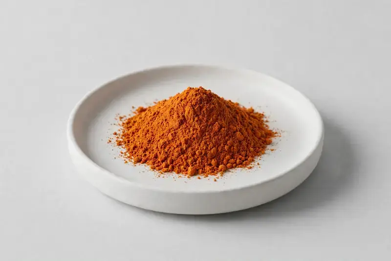

Tagetes erecta — a lutein-standardized flower extract for eye health and antioxidant formulations.

Overview
Marigold Extract is produced from Tagetes erecta flower and is standardized to lutein and zeaxanthin. It is one of the most established ingredients in eye health supplement concepts and is also used in food and beverage fortification. HerbChina Extracts is a Xi'an-based trading company sourcing through vetted partner producers, matching lutein levels and format to your target specification.
Specifications below reflect commonly requested options in the market — not a stock list. Share your target spec and we'll confirm exactly what we can supply, honestly.
| Specification | Details |
|---|---|
| Botanical identity | Tagetes erecta, flower |
| Marker compound | Lutein — commonly requested: 5-20% (HPLC); zeaxanthin — commonly requested: 1-5% (HPLC) |
| Appearance | Orange to dark orange-red fine powder |
| Mesh size | Typically 80–100 mesh (confirm per inquiry) |
| Testing | COA/TDS arranged on request; scope agreed per your spec |
Applications
Documentation
We don't claim in-house labs or certifications we don't hold. COA and TDS documents can be arranged on request, and testing scope is agreed against your specification before supply.
FAQ
Related products
Lutein (marigold-derived carotenoid)
Key marker: Lutein
View specs →Echinacea purpurea
Key marker: Echinacoside
View specs →Valeriana officinalis
Key marker: Valerenic Acids
View specs →Trigonella foenum-graecum
Key marker: Saponins
View specs →Stevia rebaudiana
Key marker: Reb-A
View specs →Clitoria ternatea
Key marker: Anthocyanins
View specs →Send your target spec and volumes — we'll respond with a tailored quotation.
Request a Quote